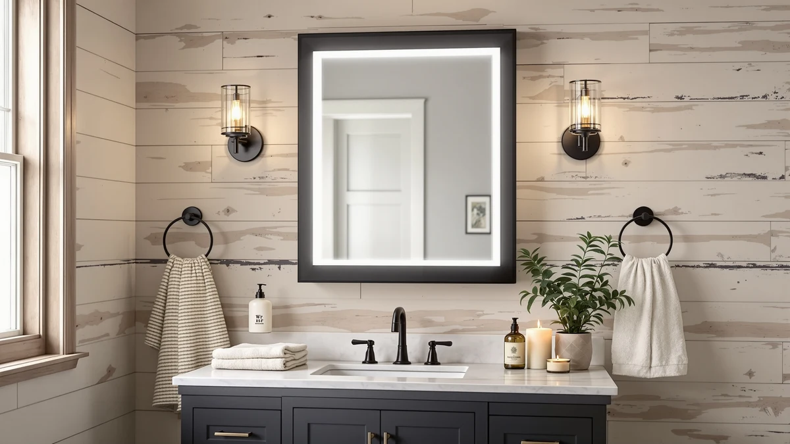

Mepplzian Lighted Medicine Cabinet Review (2026): Worth It?
Prices and picks verified as of November 2026. Independent, reader-supported reviews.


Quick Answer
For this Mepplzian lighted medicine cabinet review, we compared its touch-sensor lighting, built-in charging sockets, and $159.49 price against the Kohler, USHOWER, and LOAAO alternatives. It is the only one of the four with lighting controls and a charging outlet built into the cabinet, so it earns the top spot if storage and power matter more to you than saving ten dollars.
Our pick: Mepplzian Lighted Medicine Cabinet with, $159.49 Check Price on Amazon
Bottom line: our top pick is the Mepplzian Lighted Medicine Cabinet with Mirror at $159.49.
Things to Know Before You Buy
- Size and door swing: the Mepplzian measures 24x30 inches and its single door opens right to left only, so measure your vanity clearance before you buy.
- Power built in: a three-pin socket and USB port run through an isolation transformer, letting you charge a toothbrush or shaver inside the cabinet.
- Lighting controls: two touch sensors adjust brightness and cycle through three light colors, more control than the fixed LED strips on most lighted mirrors.
- Storage: three interior shelves, compared with two adjustable shelves on the Kohler alternative and no storage at all on the USHOWER and LOAAO mirrors.
- Reviews: Amazon has not yet published a rating or review count for this listing, so this Mepplzian lighted medicine cabinet review leans on spec and price comparison instead of a buyer track record.
This Mepplzian lighted medicine cabinet review looks at whether the brand's 24x30 model earns its $159.49 price against three simpler bathroom mirror alternatives. The cabinet pairs a tempered-glass mirrored door with built-in LED lighting, three interior shelves, and a charging socket, features you do not get from a flat mirror at a similar price. We pulled the manufacturer's listed specs, mounting details, and current pricing for the Mepplzian and the three alternatives below, then compared them side by side rather than guessing at which one works best for your bathroom.
The short answer: if you want hidden storage, adjustable lighting, and a safe charging outlet built into one cabinet, the Mepplzian is the only option in this comparison that delivers all three. The Kohler CB-CLC2026FS comes closest on build quality with its own shelving, but skips the lighting and sockets entirely. The USHOWER and LOAAO picks are plain frameless mirrors with no storage at all, so they only make sense once you have solved storage and charging elsewhere in the room.
Why You Should Trust Us
Ilane Tall covers bathroom fixtures and medicine cabinets for Best Bathroom Mirrors, and this Mepplzian lighted medicine cabinet review follows the same process used across the site. We research published specs, compare pricing across the models in a given category, and look for verified owner feedback instead of relying on marketing copy. We do not run a fake testing lab or claim to have installed every cabinet we cover, and when a detail is not confirmed in the listing, such as a rating or review count, we say so rather than guess.
For this comparison, we pulled the listed dimensions, materials, lighting controls, and current price for the Mepplzian and for the Kohler, USHOWER, and LOAAO alternatives, and noted the date those prices were checked. Readers shopping for a lighted medicine cabinet deserve to know whether a claim comes from the manufacturer's spec sheet, a verified owner, or something we flagged as unconfirmed.
Our Research Experience
Because this is a research-based review, our process for this Mepplzian lighted medicine cabinet review centers on comparing manufacturer specs, mounting requirements, and pricing rather than installing the cabinet ourselves. We checked how the tempered-glass door, aluminum frame, and dual touch-sensor lighting on the Mepplzian stack up against the Kohler, USHOWER, and LOAAO alternatives, then lined up pricing across all four, from $149.99 to $159.49. A single-door cabinet in this 24x30 size class mounts the same way most medicine cabinets do, so the socket and USB wiring inside is the detail that sets it apart from a plain mirror.
We also compared the Kohler's two adjustable glass shelves against the Mepplzian's three fixed shelves, since both solve the same storage problem at a similar price. Shoppers researching the LED medicine cabinet category report that built-in power and lighting controls are the main reasons to pay more than a flat mirror costs, and that is the trade-off we focused on here rather than treating all four products as interchangeable.
Overview & Specs

Mepplzian Lighted Medicine Cabinet with
What we like
- Built-in three-pin and USB sockets, both wired through an isolation transformer, let you charge a toothbrush or shaver without running an extension cord into the bathroom
- Two touch-sensor controls adjust both brightness and light color, with three color temperatures to choose from, something none of the three plain mirrors below offer
- Three interior shelves at 24x30 inches give you enclosed storage the Kohler only partly matches and the USHOWER and LOAAO do not offer at all
- Single-door design keeps the hardware simple, with a single hinge and a single touch-sensor panel to maintain
Flaws but not dealbreakers
- The single door only opens right to left, so it will not work for every vanity layout or reach
- At $159.49, it costs a few dollars more than the Kohler and about ten dollars more than the USHOWER or LOAAO mirrors
- Amazon has not yet published a rating or review count for this listing, so there is less buyer feedback to lean on than with an established cabinet
| Material | Tempered glass + aluminum |
| Size | 24x30-Sockets & USB |
The Mepplzian lighted medicine cabinet pairs a 24x30-inch tempered-glass mirrored door with an aluminum frame and three interior shelves, so it works as both a mirror and enclosed bathroom storage. The door opens on a single hinge, right to left, which is worth checking against your vanity layout before you buy. Inside, the shelving is sized for the usual medicine-cabinet contents, toothbrushes, skincare bottles, and a few cosmetics, rather than deep enough for bulky items.
Lighting comes from two touch-sensor controls built into the frame. One handles brightness, which you adjust with a long press, and the other cycles through three light color options with a short press, so you can switch between a cooler task-lighting tone and a warmer ambient one without buying a separate vanity light. The cabinet also includes a three-pin socket and a USB port, both routed through an isolation transformer for safer use near water, letting you charge an electric toothbrush or shaver directly inside the cabinet instead of running a cord across the counter.
What We Liked
This Mepplzian lighted medicine cabinet review turns up two clear strengths: the built-in power and the adjustable lighting. A three-pin socket and USB port wired through an isolation transformer is a genuine convenience, since it lets you charge an electric toothbrush or shaver inside the cabinet instead of running a cord across a wet countertop. None of the three mirror alternatives we compared it against offer anything like it.
The two-sensor lighting setup is the other standout. Being able to adjust brightness with a long press and cycle through three color temperatures with a short press gives you more control than the fixed LED strips built into most lighted mirrors in this price range. Paired with three interior shelves, the Mepplzian solves storage, lighting, and charging in one unit, where the Kohler only covers storage and the USHOWER and LOAAO only cover the mirror itself.
What Could Be Better
Price parity is the most obvious drawback in this Mepplzian lighted medicine cabinet review. This cabinet runs $159.49, which puts it a few dollars past the Kohler and about ten dollars above the USHOWER and LOAAO mirrors, and that gap is hard to justify on features alone without a published Amazon rating to back it up. The single door also only swings right to left, which can be a dealbreaker if your vanity layout or reach favors the opposite side.
Because the listing has no review count yet, you are taking on more of the buying risk yourself than you would with a cabinet that already has hundreds of verified owner ratings. If that uncertainty bothers you more than losing the storage and lighting features, the USHOWER or LOAAO mirrors give you an established frameless option for less money while you wait for more reviews to accumulate on this listing.
Who Is It For?
The Mepplzian lighted medicine cabinet makes the most sense for anyone replacing a plain mirror who also needs storage and a charging outlet in the same footprint, particularly in a small bathroom where adding a separate outlet or shelf is not practical. If you already have outlets near your vanity and want nothing more than a bigger reflective surface, the extra cost of the cabinet's sockets and lighting controls may not pay off for you.
Renters and anyone who cannot commit to a fixed right-to-left door swing should check their vanity clearance first, since that detail rules this cabinet in or out faster than price does. A primary bathroom with limited counter space is where the Mepplzian's combination of storage and lighting earns its $159.49 price.
Alternatives to Consider
If the price, the single-door swing, or the lack of reviews on the Mepplzian pick does not fit your bathroom, these three alternatives cover a cheaper cabinet with its own shelving, a plain two-mirror set, and a larger decorative mirror with no storage at all.

Editor's Pick
Kohler CB-CLC2026FS Frameless Bathroom Mirror
Swaps the Mepplzian's lighting and sockets for two adjustable glass shelves behind a full-overlay mirrored door, and it can mount recessed or surface-mounted. At $156.82, it's the closest alternative if you want cabinet storage without paying for lighting controls you may not use.
$156.82
Check Price on Amazon
Best Value
USHOWER 2-Pack Frameless Bathroom Mirrors
Gives you two 24x36 frameless mirrors for $149.99, with no cabinet, lighting, or sockets at all. It's the cheapest way to add mirror surface to two spots in the bathroom if storage isn't what you're after.
$149.99
Check Price on Amazon
Premium Choice
LOAAO 40"X30" Gold Bathroom Mirror
A 40x30 gold-framed mirror built from 4mm tempered glass on an aluminum alloy frame, sized for a double vanity. At $149.99, it's the pick if you want a larger decorative statement piece over storage or lighting.
$149.99
Check Price on AmazonFrequently Asked Questions
Is the Mepplzian lighted medicine cabinet review's top pick worth the price?
At $159.49, the Mepplzian costs a few dollars more than the $156.82 Kohler and about ten dollars more than the $149.99 USHOWER and LOAAO alternatives, so price alone will not settle it. It is worth the difference if you want lighting controls and a charging socket built into the cabinet. If you only need storage or a bigger mirror, one of the three alternatives below is the better value.
Does the Mepplzian medicine cabinet have an outlet inside?
Yes. It includes a three-pin socket and a USB port, both wired through an isolation transformer for safer use near water, so you can charge an electric toothbrush or shaver directly inside the cabinet.
Can you reverse which way the Mepplzian cabinet door swings?
No. The single door is fixed to open right to left, so confirm that clearance works with your vanity and mirror placement before buying rather than assuming it can be reversed.
Final Verdict
The verdict on this Mepplzian lighted medicine cabinet review comes down to how much you value storage, lighting, and a built-in outlet in one unit. For a vanity where you want all three without buying separate fixtures, the Mepplzian, with its touch-sensor lighting and isolation-transformer socket, is the strongest pick in this comparison even at its $159.49 price. If you only need shelving, the Kohler CB-CLC2026FS covers that for a few dollars less. If you want more mirror surface alone and do not need storage or power, the USHOWER two-pack or the LOAAO gold mirror both undercut the Mepplzian by about ten dollars. Match the feature set to what your bathroom is actually missing before you buy, since that decides this faster than price does.